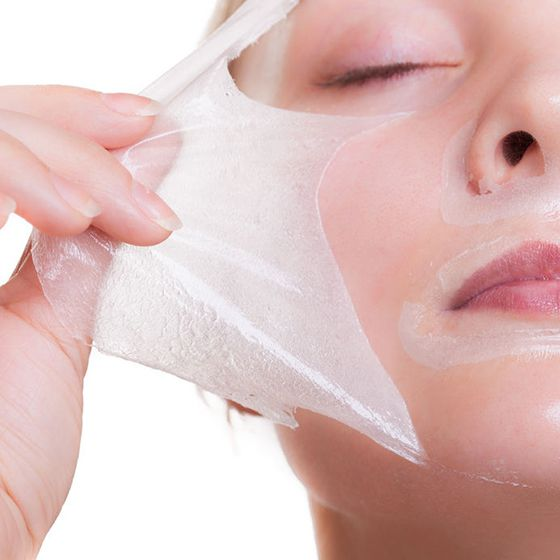

<!-- Departments Section-->
<section class="pb-0">

  <div class="container">
    <div class="row">
      <div class="col-lg-5 d-lg-block"></div>
      <div class="col-lg-7 pb-5 mb-5">
        <h1 class="text-uppercase"><span>Peelings</span></h1>
        <p>Le peeling permet d’effacer certains signes de vieillessement et redonner un éclat naturel au visage. Par un procédé de régénération de l’épiderme, il ramène de la vitalité à votre peau, illumine le teint et réduit les ridules.

          Le principe du peeling est l’application d’un composant acide qui va éliminer la couche superficielle de la peau et stimuler le renouvellement cellulaire. C’est la profondeur d’action dans la peau qui caratérise le peeling.
          Il peut être pratiqué au niveau du visage, du cou, du décolleté et des mains.

          Il existe plusieurs types de peeling allant du simple éclat « bonne mine » au véritable traitement anti-âge :</p>

        <h3>Peelings superficiels ou « lunch peel »</h3>
          Le peeling superficiel permet d’améliorer le teint pour les peaux tabagiques, de diminuer les tâches, de resserer les pores, d’affiner le grain de peau, d’agir sur l’acné micro-kystique et d’atténuer les petites cicatrices.

          Il s’agit d’un peeling aux acides de fruits, surtout l’acide glycolique, plus ou moins concentrés. Cette technique permet de reprendre vos activités aussitôt après.

          Le traitement dure quelques minutes, le dr Addenet vous appliquera ensuite une crème apaisante.
          Le résultat sera progressif et optimisé au fur et à mesure des séances. Ce peeling nécessite 4 à 6 séances, espacées de 3 à 4 semaines.

        <h3>Peelings dépigmentants</h3>
          Le peeling dépigmentant permet d’estomper le masque de grossesse (mélasma), les tâches pigmentaires (comme les tâches solaires) et d’homogénéiser le teint.

          Après le peeling, votre peau va peler finement pendant 3 à 4 jours, vous appliquerez une crème apaisante. Votre teint va s’éclaircir et les tâches vont diminuer.
          Le docteur Addenet pourra réaliser une retouche sur les taches persistantes au cours du mois suivant.


          Pour un meilleur résultat, il est conseillé d’appliquer des cosmétiques contenant des actifs dépigmentants, et une protection solaire rigoureuse. Ce peeling nécessite une éviction sociale de 2 à 3 jours et évidemment une éviction solaire permanente associée à de l’écran total.

         <h3>Peelings moyens</h3>
          Le peeling moyen a une action renforcée. Il permet de supprimer certaines tâches, de lisser les fines ridules et vise à améliorer le micro relief cutané.

          On utilise différentes concentrations d’acide trichloracétique, choisies en fonction du patient (profondeur des rides, des cicatrices, des activités).

          Après le peeling votre peau est tendue, brune. Elle va peler de 4 jours à 10 jours, en se détachant par petits lambeaux qu’il ne faut surtout pas arracher. Le docteur Addenet vous recommandera une crème émolliante pour bien hydrater votre peau.

          Pendant les semaines qui suivent, la protection solaire doit être très rigoureuse. Plusieurs séances peuvent être nécessaires.

         <h2>Déroulement des séances</h2>
          Pour optimiser les résultats, votre peau doit être préparée pendant un minimum de  quinze jours. Vous devez appliquer une crème aux acides de fruits, contenant des actifs dépigmentants.

          Les séances peuvent durer de 15 à 4O minutes. Le docteur Addenet applique le produit sur votre peau (préalablement démaquillée) à l’aide d’un pinceau, d’une compresse ou d’un coton tige et le laisse agir pendant quelques minutes. Selon le type de peeling, le produit est ou non neutralisé avec une lotion. En fin de séance, une crème apaisante est appliquée.

          Pour les peelings superficiels, vous ressentirez des picotements ainsi qu’une légère rougeur au niveau de la peau, qui s’estompera au bout de quelques minutes.
          Pour les peelings moyens, vous sentirez une sensation de brûlure de quelques minutes, que le dr Addenet atténue avec une ventilation et une pulvérisation d’eau thermale.

          La protection solaire est obligatoire quel que soit le peeling utilisé.

          Afin d’optimiser les résultats, les séances de peeling peuvent être associées à des séances de LED.

        <h2>Prix</h2>
          A partir de 100 euros jusqu’à 250 euros en fonction du peeling choisi.
      </div>
    </div>

  </div>
</section>

